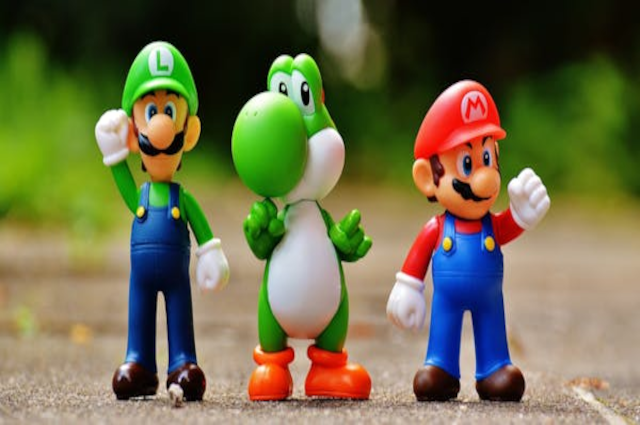

Dia do Mario
postado 21 agosto 2025
O Dia do Mario (ou MAR10 Day) é celebrado em 10 de março devido à grafia em inglês da data, "Mar.10", que se assemelha ao nome "Mario". A Nintendo abraçou essa data criada pelos fãs em 2016 para realizar promoções em jogos, lançar eventos temáticos e proporcionar descontos em produtos relacionados à franquia, como no aplicativo Super Mario Run e no console Nintendo Switch. Por que 10 de março? Nos Estados Unidos e em outros países de língua inglesa, a data 10 de março é escrita como "March 10". A abreviação dessa data, "Mar.10", forma a palavra "Mario". Como é comemorado? Promoções e descontos: A Nintendo oferece descontos em diversos jogos, consoles e produtos do personagem e de seus amigos. Eventos temáticos: São lançados eventos especiais em aplicativos, como no Super Mario Run, e em consoles como o Nintendo Switch. Atrações interativas: Em algumas capitais, como em São Paulo e Curitiba, a Nintendo realizou o Nintendo Switch Shopping Tour, com a possibilidade de jogar títulos da franquia e tirar fotos com os personagens. Eventos online: Jogos como Mario Kart 8 Deluxe recebem desafios comunitários onde os jogadores podem ganhar pontos de platina ao atingir uma meta de voltas combinadas.